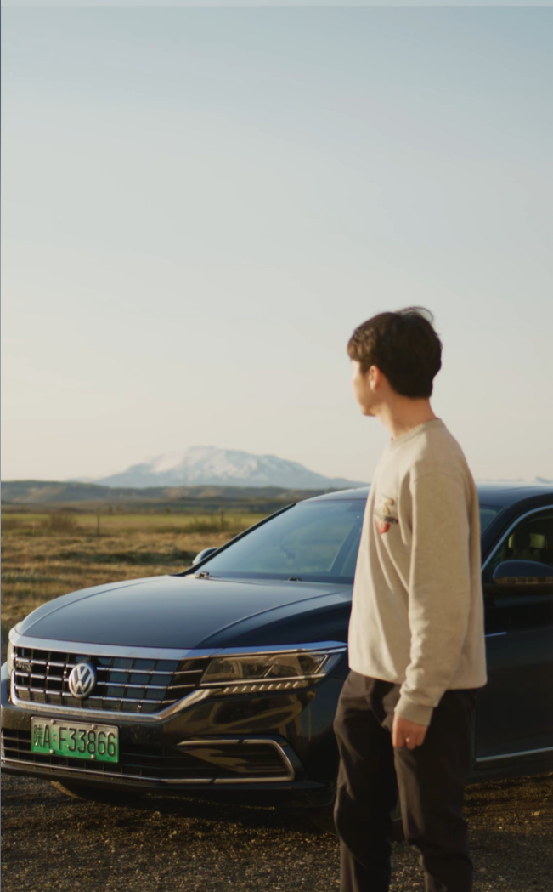
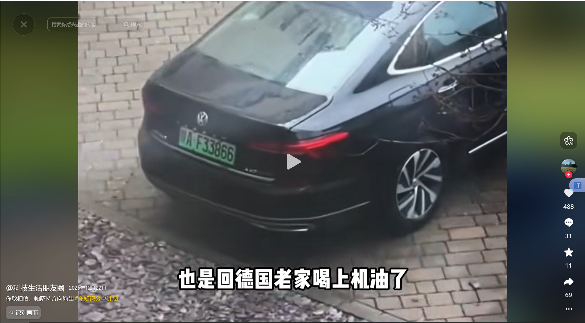
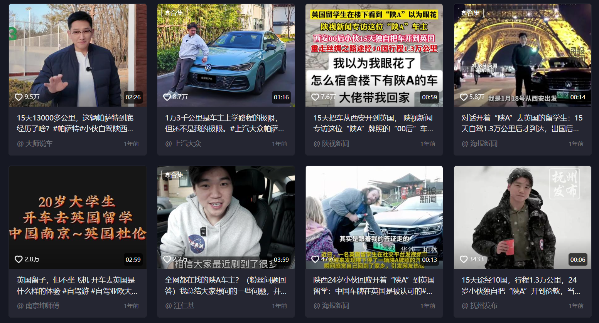
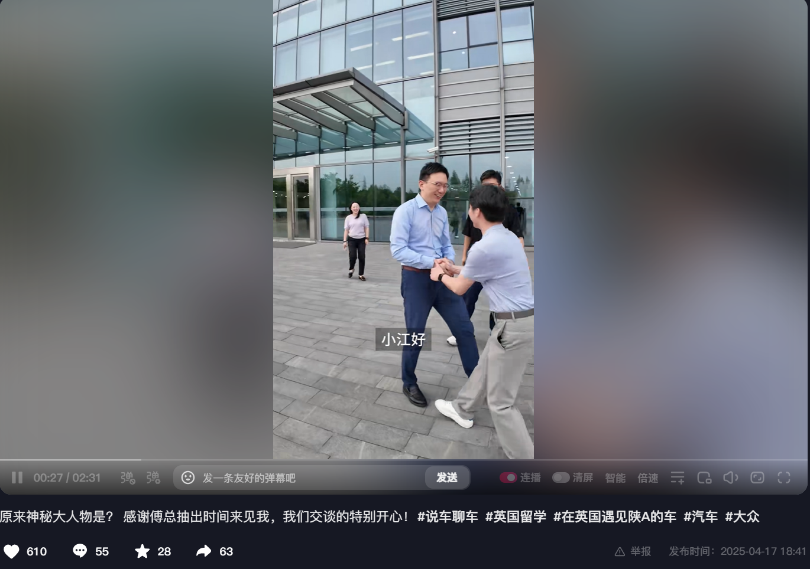
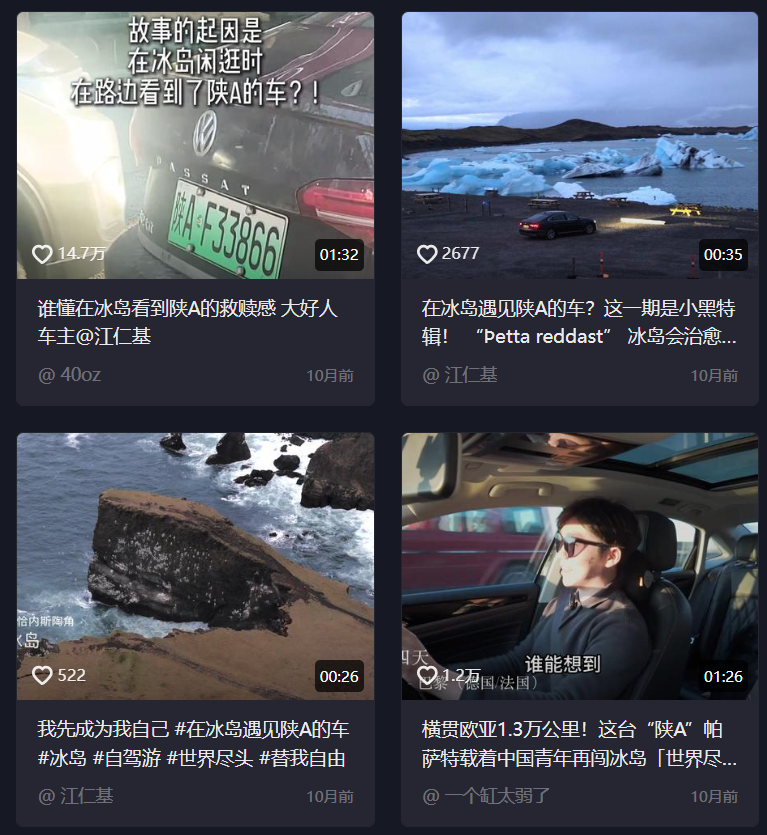

OVERVIEW
偶发热点事件
升格为品牌主导车主 IP
升格为品牌主导车主 IP
ICC 2 小时内建联 KOL，24 小时内容上线，从急速响应到官方联动再到长线 IP 化运营。
2.3亿+
累计总播放
120万+
累计总互动
807万+
单条最高
2h
建联响应

PHASE 01 · 2月原点事件
敏锐捕捉
"陕A帕萨特"原生热度
"陕A帕萨特"原生热度
非品牌策划，纯自然流量——车主江仁基的"陕A帕萨特"内容在抖音产生原生热度。ICC 在日常监测中发现信号，判断这不是一次性热点，而是可运营的 IP 素材。


PHASE 02 · 2h-24h 急速响应
2 小时建联 KOL
24 小时内容上线
24 小时内容上线
热点窗口期极短。ICC 在热度上升期 2 小时内完成建联，评估达人调性与品牌契合度，24 小时内第一条合作内容上线——完成从"路人车主"到"品牌合作达人"的身份转换。
PHASE 03 · 48h-7天 官方联动
官方响应 + 车评解析
+ 矩阵二次扩散
+ 矩阵二次扩散
品牌官方快速响应，多平台营销号矩阵扩散：车评博主跟进解析、官方账号联动转发、评论区互动引导——层层递进放大声量，将单点热度转化为多触点传播势能。

PHASE 04 · IP 化运营
从热点到长线 IP
冰岛 · 德国 · 纽北赛道
冰岛 · 德国 · 纽北赛道
不是消耗热点做一条广告，而是围绕车主真实人设策划系列内容：#在冰岛遇见陕A车、#德国狼堡保养、#纽北赛道——让江仁基成为帕萨特的"民间代言人"，持续生产具有国际视野的车主视角内容。


TAKEAWAY
热点不是等来的
是抢来的
是抢来的
热点敏锐度 + 快速执行力 + 事件 IP 化能力——不仅看到了热点，更接住了泼天富贵。
ICC 在帕萨特体系内做到了「从 0 到 1 孵化车主 IP」——从偶发热点到 2.3 亿播放的长线品牌资产。
ICC 在帕萨特体系内做到了「从 0 到 1 孵化车主 IP」——从偶发热点到 2.3 亿播放的长线品牌资产。
← 左右滑动浏览 →